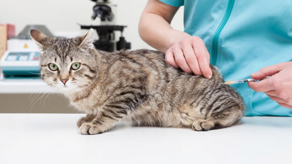

Vaccinurile sunt foarte importante deoarece contribuie la prevenirea unor boli contagioase si uneori fatale. Unele sunt obligatorii, în timp ce altele sunt doar recomandate. Printre vaccinurile pe care le putem oferi se numara Primodog, Eurican, Rabisin si Purevax
